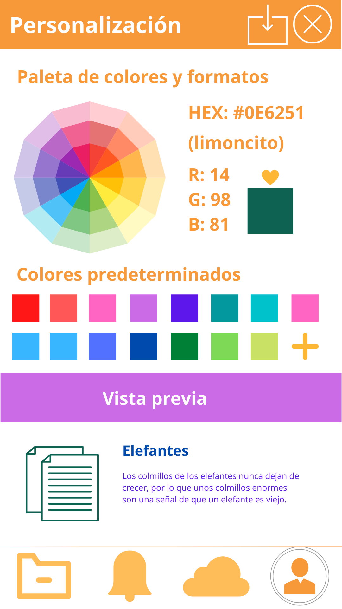
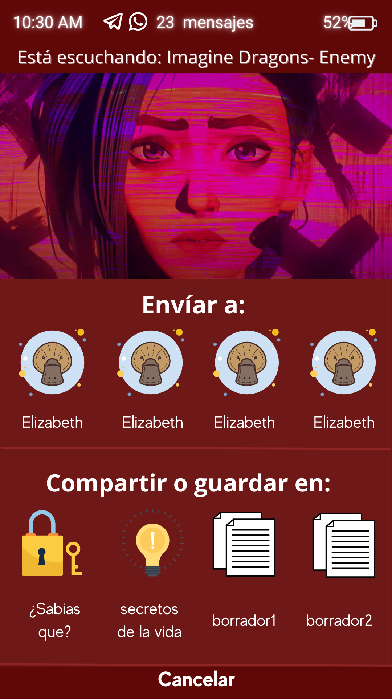

Añadidos del design thinking
El marketing emocional es la disciplina del marketing que utiliza una marca dentro de una estrategia, con el objetivo de lograr un vínculo afectivo con usuarios, consumidores, clientes y futuros clientes, para que estos sientan la marca como algo propio y necesiten ser parte de ella.
Sistema de nube
Las mejoras en este sistema, es la capacidad de usar iconos predesiñados para usar en tus iconos y la posibilidad de subir tus propias imagenes.
Botón flotante
Ahora esta opción trae su menú de configuración con varias ayudas, entre ellas la de visibilizar o hacer invisible el botón, cambiar el tamaño, etc.
Pesonaliza tus cosas
Con un una nueva paleta de colores, colores prederminados, y la recepción de formatos rgb y hex a mano, puedes personalizar cada parte de la interfaz.

Haz tu propio estilo
Crea tus propios diseños y deja que tu imaginación fluja para hacer los diseños mas especatulares que se te ocurran y compártelos con los demás.

Foro
Ahora puedes crear tu propio foro y compartir de formas más cómoda lo que tengas que decir.
Un foro de internet es un lugar donde las personas pueden intercambiar ideas sobre temas de interés. Sus miembros pueden publicar discusiones y leer y responder a los mensajes escritos por otros participantes. Un foro por lo general permite a todos los miembros hacer posts y comenzar nuevos temas.
Dentro del foro podrás crear la comunidad que siempre has querido, podrás tomar temas de interés cultural, educación, entretenimiento, etc. Lo que desees.
Si aplicamos esta idea a Pocket 2.0 entonces tenemos una aplicación que no solo ayuda a nuestros públicos estrella (estudiantes y gente común) sino tambien a otros como instituciones, grupos sociales, etc.
Nuestro mercado de oportunidades se amplia drásticamente con un foro.